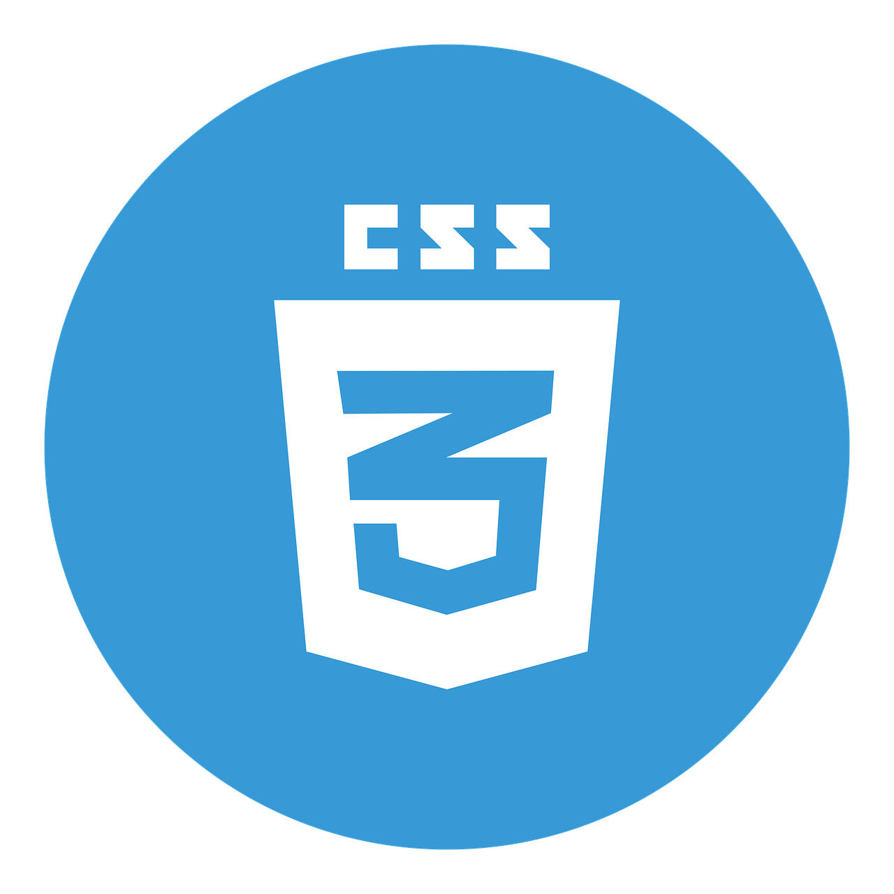
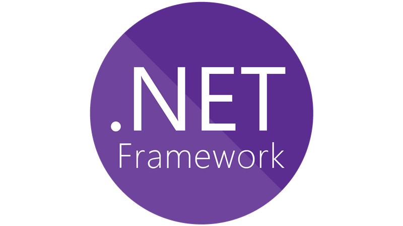

Win Forms y SQL Server
Se trata de una aplicacion de escritorio para gestionar los artículos de un comercio. Cada articulo tiene su marca y pertenece a una categoría.Es un CRUD básico para
ver crear, modificar y eliminar articulos, categorias y marcas. Está aplicación esta realizada:
.Net Framework 4.8
Lenguaje C#
Sql Server
Arquitectura en capas: Dominio, Negocio, Vistas
ASP.NET Core 5 MVC y Entity Framework
Una aplicación Web para poder crear distintos cursos, cada uno de ellos con un listado de alumnos y sus notas.Esta aplicacion Web está realizada con:
.Net Core 5
Arquitectura MVC
Entity Framework
Lenguaje C#
localDB
Diseño Web Minimalista
Si bien, mi enfoque está orientado al backend, me surgió la idea de crear una página Web Dinámica de un centro de estética, que todavía no se encuentra terminado pero la idea es mostrar un poco el diseño, realizado con:
HTML 5
Bootstrap 5
CSS3
Javascript
Acerca de mí
Académico
Finalicé mis estudios en el "ISFT N°179 "Dr. Carlos Pellegrini" en el año 2022 en la Tecnicatura Superior en Análisis de Sistemas y comencé a profundizarme en el ámbito del desarrollo, ya que me apasiona poder encontrar y analizar soluciones para luego codificarlo en algún lenguaje de programación.
Intereses
Me encantaría formar parte como desarrolladora Backend con .NET en un equipo, para poder brindar soluciones reales. Cuento con experiencia de administrativa y aprendí la gran importancia de trabajar en equipo, ya que hace mucho más eficiente y ágil cualquier proceso.
Habilidades
En cuanto a las tecnologias o lenguajes que utilice en mis diferentes proyectos, fueron los siguientes:


